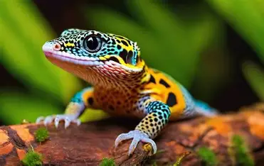

O jacaré-do-pantanal é um réptil conhecido por sua força e habilidade na
água.
Vive principalmente em rios, lagoas e áreas alagadas do Pantanal.
É carnívoro e se alimenta de peixes, aves e outros pequenos animais.
Ouça o barulho emitido pelo Jacaré-do-pantanal:
Tartaruga-gigante
A tartaruga-gigante é um réptil famoso por sua grande longevidade, podendo viver
mais
de 100 anos.
É encontrada principalmente nas Ilhas Galápagos.
É herbívora e se alimenta de plantas, folhas, frutos e cactos.
Gecko-tokay

A lagartixa gecko-tokay é um réptil conhecido por suas cores vibrantes e manchas
alaranjadas.
Vive principalmente em florestas tropicais da Ásia.
É carnívora e se alimenta de insetos e pequenos animais.